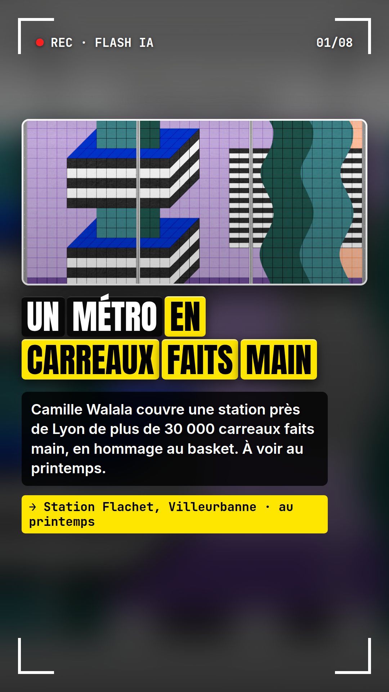
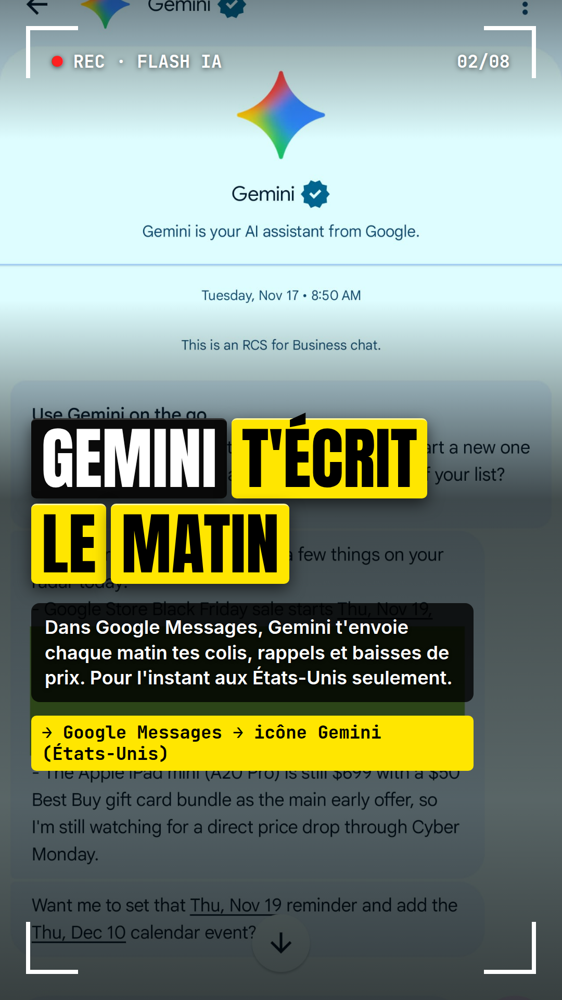
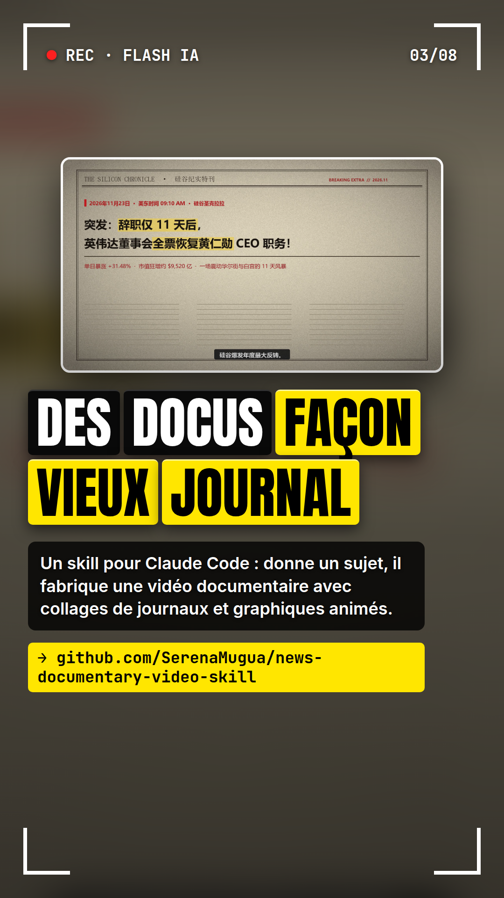
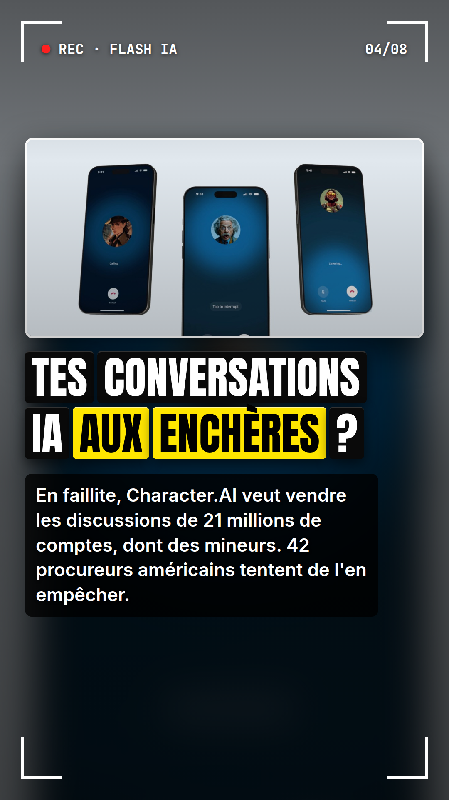
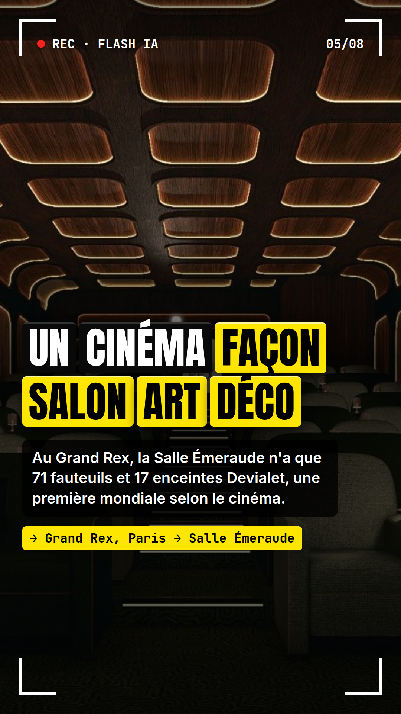
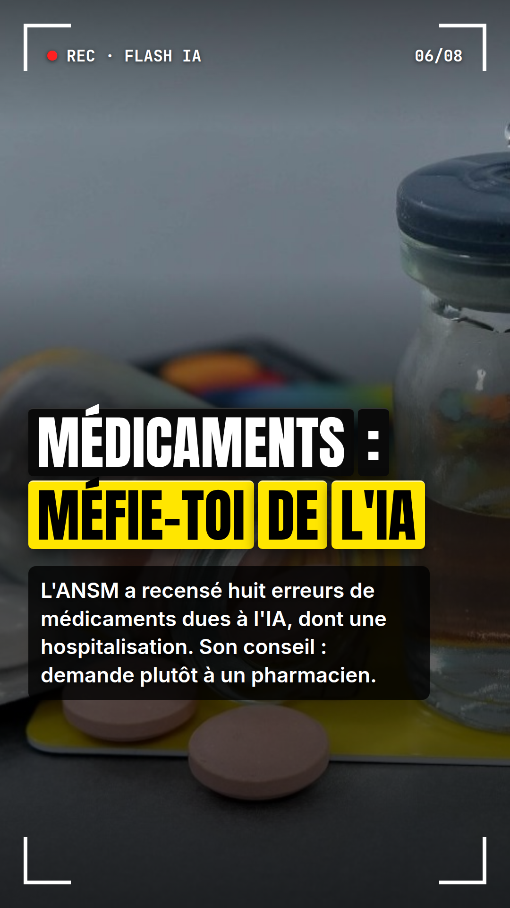
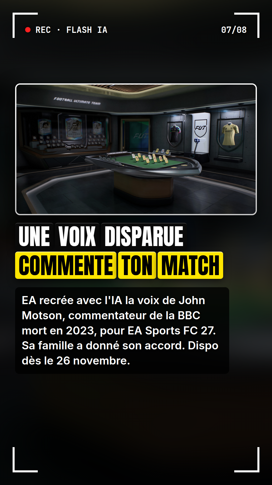
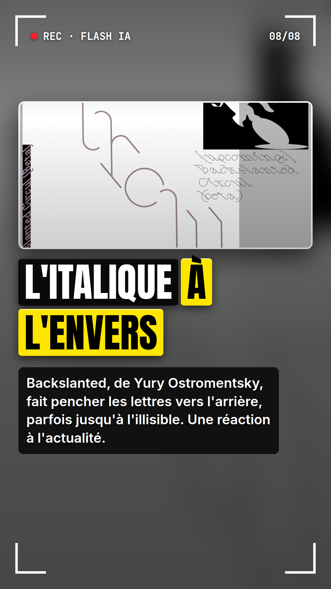

2026-11-26 · 10 slides
Et si une voix disparue commentait ton match ? 👇 1. Un métro en carreaux faits main — https://www.creativeboom.com/news/camille-walala-is-covering-a-lyon-metro-station-in-30000-hand-made-tiles/ 👉 Où le trouver : Station Flachet, Villeurbanne · au printemps 2. Gemini t'écrit le matin — https://9to5google.com/2026/11/24/google-messages-gemini-tasks/ 👉 Où le trouver : Google Messages → icône Gemini (États-Unis) 3. Des docus façon vieux journal — https://github.com/SerenaMugua/news-documentary-video-skill 👉 Où le trouver : github.com/SerenaMugua/news-documentary-video-skill 4. Tes conversations IA aux enchères ? — https://techcrunch.com/2026/11/25/state-ags-fight-character-ais-plan-to-auction-off-users-private-chats/ 5. Un cinéma façon salon Art déco — https://www.numerama.com/pop-culture/2384669-le-grand-rex-ouvre-une-salle-unique-au-monde-avec-un-detail-qui-change-tout.html 👉 Où le trouver : Grand Rex, Paris → Salle Émeraude 6. Médicaments : méfie-toi de l'IA — https://www.frandroid.com/culture-tech/intelligence-artificielle/3339573_des-informations-inexactes-contradictoires-ou-inadaptees-lagence-du-medicament-met-en-garde-contre-lusage-de-lia-pour-les-conseils-medicaux 7. Une voix disparue commente ton match — https://www.bbc.co.uk/news/articles/c65y10j841jpo 8. L'italique à l'envers — https://www.itsnicethat.com/articles/yury-ostromentsky-backslanted-graphic-design-project-251126 #ia #intelligenceartificielle #veilleia #chatgpt #claude #design #techtok







